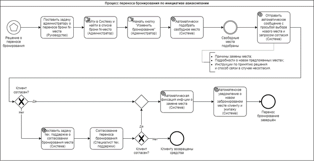
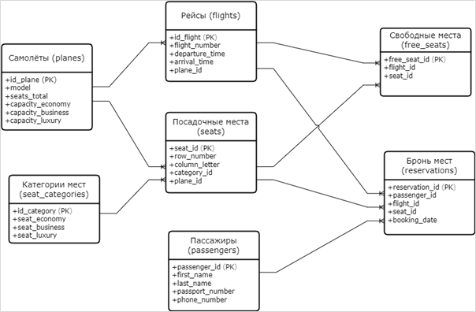
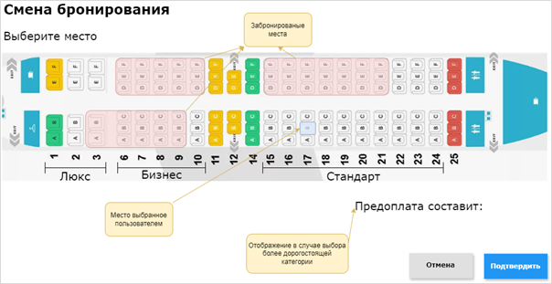

Ниже представлено описание задачи от заказчика "как есть". Ознакомьтесь с описанием — это важно для выполнения тестовых задач
Процесс приобретения билетов на рейс, с возможность выбора категории мест; Процесс бронирования мест; Процесс управления забронированными местами.
Упомянутые роли: Пассажир, Стюарт, Авиакомпания. Неупомянутые роли: Администратор.
Доброго дня!
Спасибо большое за отправленное описание вашей задачи!
Чтобы мы могли точнее проработать ваш запрос, пожалуйста, уточните:
Существуют ли штрафные санкции или ограничения при отказе от рейса менее чем за сутки до вылета?
Какой именно информацией о местах должен обладать главный стюард помимо простой разбивки по категориям? Есть ли необходимость отражать информацию о детях, животных, наличии специального питания и другие подобные нюансы?
Существуют ли ваши внутренние ИТ-инфраструктуры, на которые нужно интегрировать новую систему? Используемые технологии и форматы данных для синхронизации данных с существующими CRM-системами и ERP-системами авиакомпании?
Возможно ли введение динамической ценовой политики в зависимости от сезона, востребованности направления или близости даты вылета?
Имеются ли у вас собственные требования к защите персональных данных пользователей и платежной информации? Требуется ли сертификация системы по международным стандартам информационной безопасности?
Какая форма отчета необходима руководству авиакомпании для мониторинга продаж и эффективности использования мест?
Верно ли в пункте 9 указанно количество мест для бронирования за один запрос? Верно ли что один пользователь может приобрести до 16 билетов на один рейс?
Всего доброго,
Системный аналитик
ООО "Название Компании"
Пассажир выбирает рейс и покупает билет онлайн. Сразу после оплаты система присваивает ему случайное место категории в зависимости от категории.
Через личный кабинет на сайте пассажир получает доступ к странице бронирования мест. Здесь представлена интерактивная схема салона самолета с указанием свободных и занятых мест, и доплатой если будет выбрана более дорогая категория.
Если место не устраивает пассажира, он может самостоятельно сменить его на любое свободное место категории «Стандарт» или же оплатить улучшенную категорию («Люкс», «Бизнес»). Выбранное место фиксируется системой немедленно после подтверждения выбора.
Ограничения и правила:
В случае отказа от полета пассажир вправе оформить сдачу билета через личный кабинет сайта, получив полную компенсацию стоимости.
Особые случаи: Авиакомпания оставляет за собой право внести изменения в размещение пассажиров, предложив замену забронированного места другим местом. Пассажир обязан согласиться с изменением, подтвердив согласие. Если замена места не устроит пассажира, авиакомпания предлагает два варианта решения ситуации:


Форма отчёт для стюарда по конкретный рейс (Пример)
| Ряд | Место | Фамилия | Имя |
|---|---|---|---|
| 5 | A | Иванов | Алексей |
| 12 | C | Петрова | Анна |
| 7 | F | Сидоров | Дмитрий |
Свободные места: 12
Запросы:
Список всех пассажиров с их забронированными местами:
SELECT s.row_number, s.column_letter, p.last_name, p.first_name
FROM reservations r
JOIN passengers p ON r.passenger_id = p.passenger_id
JOIN seats s ON r.seat_id = s.seat_id
WHERE r.flight_id = :flight_id;
Количество свободных мест:
SELECT COUNT(*) AS available_seats
FROM free_seats fs
WHERE fs.flight_id = :flight_id;

Email: Основной канал оповещения. Должен включать детальные сведения о заказе и инструкцию по изменению или отмене бронирования.
SMS: Альтернативный канал для оперативной доставки короткого уведомления.
Push-уведомления: Быстрое информирование зарегистрированных пользователей мобильных приложений о событиях.
Механизм должен гарантировать доставку уведомлений даже при высокой нагрузке на серверы.
Оптимизация размера письма и содержания SMS для быстрой доставки.
Использование дублей уведомлений через разные каналы (email + SMS) для исключения потерь сообщений.
Простота интеграции.
Адаптация к стандартам кодировки текста и языка (UTF-8, локализация уведомлений).
Масштабируемость сервиса.
Возможность отслеживать статус доставки уведомлений (подтверждение прочтения).
Генерация отчётов о доставке уведомлений.
Функция автоматического переотправления сообщений в случае неполучения первого уведомления.
Частичная маскировка личных данных пассажира.
Отсутствие открытой передачи конфиденциальных данных в тексте уведомления.